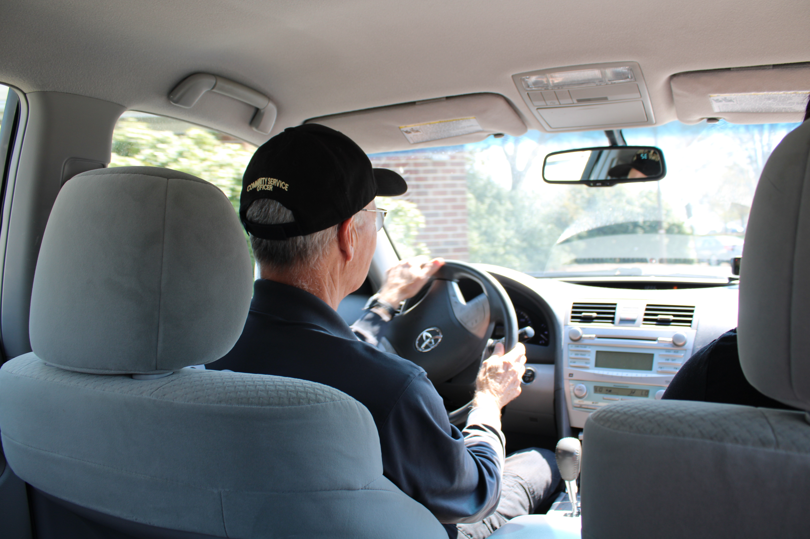
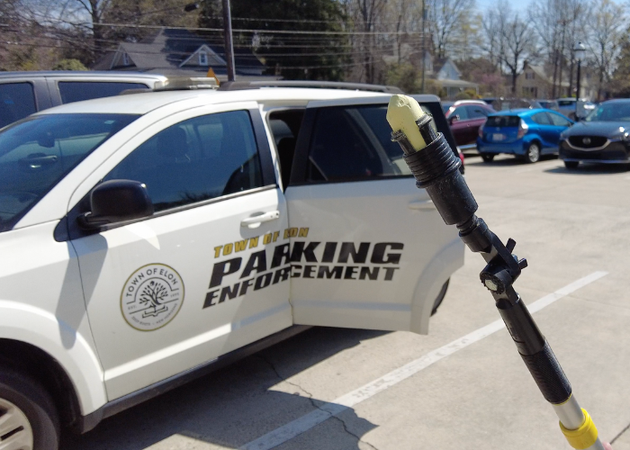
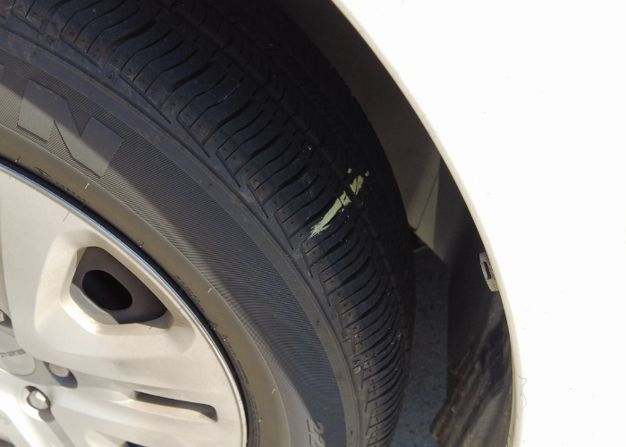
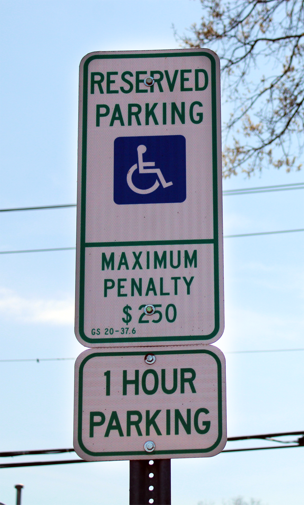

University traffic officer Kim Farmer drives around campus ensuring every car is following parking regulations. Nyah Phengsitthy, Elon News Network.
The sun is still rising as Kim Farmer begins roaming the streets of Elon University in his security car. As students, faculty and staff roll into their parking spots around campus for the day, Farmer makes sure that everyone is following campus parking rules.
As a university traffic officer, Farmer mainly drives around the south side of campus, checking faculty parking along East Lebanon Avenue, Historic Neighborhood lots and other areas when needed. Beginning around 8 a.m., Monday through Friday, he issues tickets to drivers violating campus parking rules, which often results in 20 to 30 tickets per day, and more than 100 tickets per week. After being in this role for 10 years now, he said he’s familiar with many of Elon's parking habits.
I recognize the cars because everybody's pretty predictable. They park in the same place. I can't tell you every car that parks along this railroad, but I can tell you when something doesn't look right."
— Kim Farmer, Elon University Traffic Officer
This school year though, Farmer has become more familiar with parking habits across campus as he’s finding more drivers violate Elon’s parking rules. Parking enforcement has increased this year, and many drivers are feeling the effects of it when they walk out to a ticket on their windshield, or sometimes, their cars towed away. According to Chief of Campus Safety and Police Joe LeMire, more than 4,600 parking tickets have been issued in the 2022-23 school year so far, which is on pace to beat last year’s 4,700 tickets issued.
One of the main factors behind parking enforcement is due to the university’s growth, LeMire said. Aside from the rising student population, the university’s additional infrastructure affects where drivers can park. The new walking path built in 2022 between Danieley Neighborhood and Colonnades Neighborhood removed approximately 95 parking spots, pushing students to find parking in other areas outside of their permit’s designated area. The upcoming expansion of the East Neighborhood will also remove 50 parking spots.
Drone video of walking path built between Danieley and Colonnades Neighborhoods. The path removed approximately 95 parking spots. Drone video by Clare Grant, Elon News Network.
As you build more buildings, as you take away more parking, people start taking more opportunities to use spaces they shouldn't use, so the enforcement went up,” LeMire said.
This year specifically, parking enforcement has increased in the Innovation Quad lot and Danieley Center Neighborhood. Parking officers are finding that many students in these lots do not have Elon parking permits, or drivers with registered vehicles are parking outside of their permit restrictions. LeMire said that the other top areas parking tickets are written the most are in the Global Neighborhood and Inman Admissions lots.
~$375,000
Total revenue from permits and parking tickets combined.
Where does the money go?
The majority of university parking fines begin at $50, which includes ticketing for unregistered vehicles, cars parked in a restricted or reserved area, or parking on the grass or sidewalk. More severe fines, beginning at $100, are issued to drivers who park on tram paths, handicap spaces and fire lanes.
University Parking Ticket Costs
Vehicle on tram path $100 Parked in a fire lane $100 Parked in a handicap space $100 Parked in a maintenance space $50 Parked in a restricted/reserved space $50 Parked on sidewalk or grass $50 No permit $50 LEV space $50 Parked in a loading zone $25 Parked in residential life space $50 Vehicle Towed $75
In the 2021-22 academic year, the total revenue parking enforcement made from permits and parking tickets combined was around $375,000. With the university on pace to issue more tickets this year, the total revenue is set to be even higher for 2022-23.
The money collected from fines and permits goes to a central university fund. The fund can sometimes be used for parking lot maintenance, such as striping parking spots, implementing and maintaining parking signs, and even salting the lots in the winter.
The money collected from fines and permits goes to a central university fund. The fund can sometimes be used for parking lot maintenance, such as striping parking spots, implementing and maintaining parking signs, and even salting the lots in the winter.
“People get really upset about parking, but we want them to understand that the parking enforcement is to have people follow the rules,” LeMire said. “I'd be happy to make no money. I'd be happy to find no parking violations whatsoever.”
Enough parking or enough convenience?
According to the Parking Rules and Regulations handbook, there are enough parking spaces on campus to accommodate all registered vehicles, but that does not guarantee that a parking space will be available at a designated location at any time. Campus maps show approximately 6,000 parking spots available for Elon students, faculty and staff, with 300 of those spots reserved for disability parking, low emission vehicles, faculty living in residence halls, and reserved spots for maintenance workers and police.
Map of Elon University Owned and Operated Parking Lots
But while the university technically has enough parking spots, some people may not find them to be convenient. For sophomore Chandler Franko, driving is more convenient for getting around campus, but that sometimes comes with consequences in order to get to a destination on time.
“It's a walkable campus, but sometimes people just don't have enough time or don't have the physical ability to walk,” Franko said. “There’s also not really ample parking close to most of the buildings.”
University Parking Permits
Global (GN) $50 Commuter Student (CS) $160 Danieley Center (DC) $160 Historic (HN) $160 Colonnades (KB) $160 Mill Point (MP) Free Oaks (OK) $160 Graduate (GR) $30 Oaks (OK) $50 Faculty/Staff (FS) Free Graduate Students $30 Law School (LS) Free Physical Therapy/ Physicians Assistants (GF) $160 More on Elon Parking Permits
Franko said she’s received multiple parking tickets from the university this year. Feeling the effects from parking enforcement more than once, she said the university should reevaluate its rules and regulations for drivers.
“They need to acknowledge that there are quite a lot of students who have cars given that they allow anyone from any grade to have a car,” Franko said.
Senior Gavin Beall has also received a number of parking tickets from the university as a commuter student. Beall said the university should consider more lenient parking rules for commuters.
Every time I get a ticket I just crumble it up and throw it away. I don't know how they charge you for it, but I just don't pay attention to it. ... They should definitely expand parking, and I think that they need to just be more lenient."
— Gavin Beall, Elon Senior
Students that violate parking rules multiple times can have their parking privileges revoked by the university, and avoiding fines can also prevent students from participating in graduation exercises or obtaining transcripts. LeMire said that the university police department sends unpaid tickets from the previous month to the Bursar’s office on the 10th day of each month, which is then communicated to the students with unpaid dues.
Farmer said he often deals with students directly in parking lots concerned about receiving a ticket, but it all goes back to if the driver obeyed the rules. There are times, though, when he can be forgiving.
“If they come out, and they're nice about it, I'll let them go,” Farmer said. “I just say, ‘Here's a verbal warning. Don't do this anymore.’”
More rules and regulations
Town of Elon Parking Tickets
Handicap spot $100 1 hour zone violation $25 2 hour zone violation $25 Parked in a prohibited zone $25 Parked in a fire lane $25 Parked within 20ft of intersection $25 Parked within 5ft of fire hydrant $25 Parked left side to curb $25 Parked within 10ft of mailbox $25 Other $25
Drivers must also follow another set of rules and regulations if they utilize parking in downtown Elon. These additional parking rules belong to the town of Elon, with their main parking spaces located along North Williamson Avenue and one or two hour parking along West Lebanon Avenue. All of the tickets from the town of Elon begin at $25 — half of what the university mainly charges. The money collected from fines goes to a general town fund.
Town of Elon’s Sgt. Robert Lovett said the main issue the town sees with parking is when students confuse the difference between university and town parking. Lovett said that parking officers frequently find that students fill up downtown Elon’s parking during the school day and park over the designated time limit.
Our parking is designed for downtown businesses. There is no student parking provided by the town of Elon...That being said, doesn't mean the student can't park there — we don’t care. It's just meant for parking downtown."
— Sgt. Robert Lovett, Town of Elon Sgt.
Town of Elon's civilian parking enforcement officer uses a chalking stick to mark cars. Erin Martin, Elon News Network.
Town of Elon’s Civilian Parking Enforcement Officer Sammy Boggs said he writes between three to 10 tickets a day. Beginning at 8 a.m. weekdays, Boggs has a schedule where he “walks and marks” during specific hours of the day. His process starts with first writing down the license plate number of the vehicle and then chalking the back tire with a specific symbol. He then returns at a later time to make sure drivers don’t park beyond the time limit.

Example of just one of the various tire chalk marks done by town of Elon civilian parking enforcement officer Sammer Boggs. Erin Martin, Elon News Network.
“I might do a horizontal line. I might do an X,” Boggs said. “It just depends on what I choose to put. At any given time, it'll always be something different.”
Boggs said the town is more flexible when it comes to towing and ticketing compared to the university, but they aren’t as lenient to drivers who take advantage of the downtown parking. He often finds student drivers moving their cars along the one and two hour parking spot all day.
Handicap parking sign in the town of Elon. Nyah Phengsitthy, Elon News Network.
“You do have businesses there again, that people want to come and go get coffee or go to the bookstore or eat pizza,” Boggs said. “If you got cars just constantly jumping around, nobody new is downtown.”
Another parking issue the town sees is when students utilize the handicap parking spots — for the wrong and right reasons. Boggs said that he sees students use handicap spots without a pass more than often, which result in a $100 parking violation fine, but there are also students who park in the spots with a pass, but their handicap permit is only valid for on-campus parking only. Those students are still fined $100.
Lovett said the town is currently in the process of rewriting their parking ordinances to be more clear about parking rules.
Does the university need more parking?
According to LeMire, there are no current set plans for additional parking to be added to the university, but implementing another lot takes more than just pouring cement onto a designated area.
If the university were to build another parking lot, LeMire said the estimated cost would be between $2,000 to $3,000 per slot. The estimated cost to build a parking structure, such as a garage, would be $30,000 or more. This cost factors in ground drainage work, cementing, striping parking spots and other building and maintenance.
$30,000+
Cost to build a parking garage on campus.
LeMire is currently part of a university parking committee that discusses the future of what parking will look like on campus. The committee has been analyzing if the campus needs additional parking, who should be able to bring a car on campus and if there needs to be more flexibility with parking permit limitations.
The committee found that many other universities across the country don’t allow freshmen, and sometimes sophomores, to bring cars to campus. Parking permits are also higher at other universities, including at some of Elon’s peer institutions such as James Madison University, Fordham University and American University. Some of those universities charge more than $400 for a full-year parking permit, which is much higher than Elon’s $160 permit charge.
As the parking committee continues to discuss the next steps for Elon’s parking system, LeMire encourages drivers who utilize Elon’s parking to relay any comments or concerns to the Elon University Police Department.
Parking officers also encourage drivers to continue to follow parking rules and regulations — even if it means just taking the time to read the parking lot signs.
Everybody needs to be respectful of the rules, and it would make my job much easier...it’s easy to complain, but do what's right. If you're having a real issue, call our office before you park somewhere."
— Kim Farmer, Elon University Traffic Officer
Erin Martin contributed to the reporting of this story.